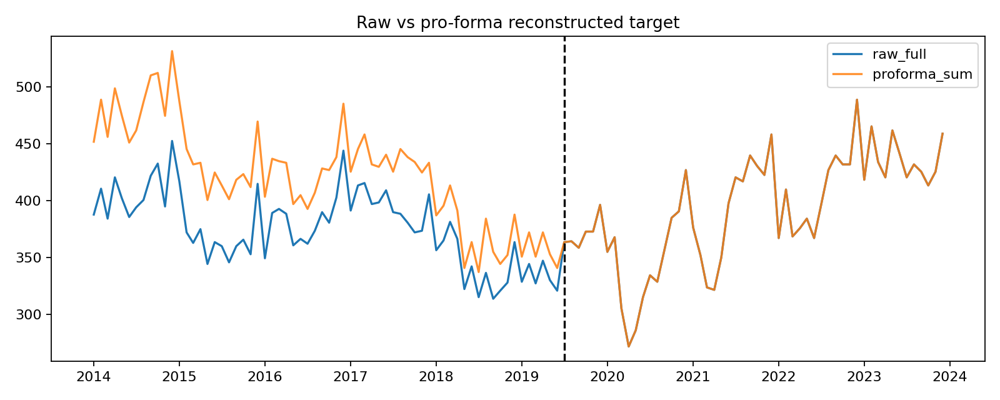
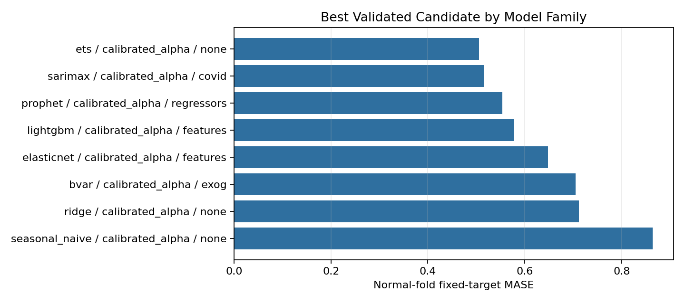
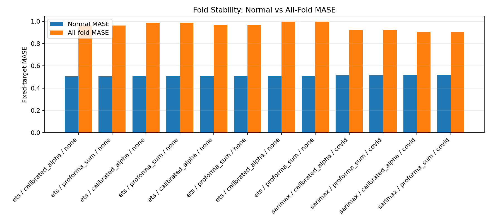
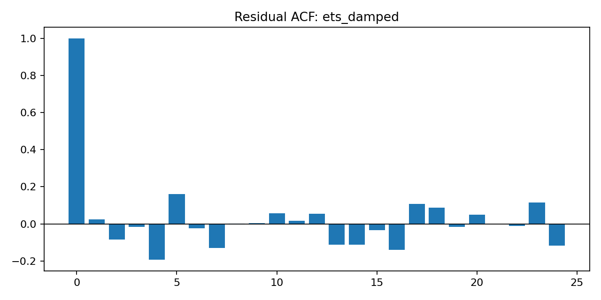
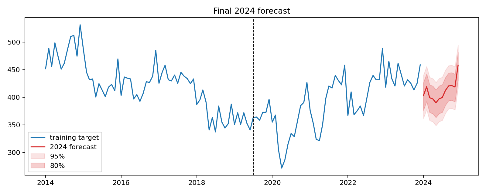

Decisao Principal
Qual era a escolha? Decidir se os dados pre-merge deveriam entrar no treinamento para reduzir a MASE esperada dos 12 meses ocultos de 2024, sem quebrar robustez, validacao temporal, diagnostico residual ou protecao contra vazamento.
Escolha final: usar o historico pre-merge reconstruido como pro-forma simples. O candidato aparece como calibrated_alpha, mas o alpha final e 1.0, entao a representacao final equivale a B_t + A_t antes de 2019-07 e C_t observado depois.
O que decidiu esse caminho?



A evidencia critica e a validacao temporal com common_mase, que usa denominador fixo por fold. O melhor candidato com pre-merge reconstruido tem MASE normal 0.506. O melhor post_only tem MASE normal 0.679. Isso representa melhora de aproximadamente 25.6% no proxy mais proximo do alvo oculto de 2024.
Os controles tambem passam: o modelo final bate o SeasonalNaive, tem validacao completa, nao usa 2024, compara validacao contra C_t observado, passa o gate de overfit e tambem vence no diagnostico de robustez por origens rolantes extras: sim.
| target_strategy | model_family | model_id | covid_mode | normal_mean_common_mase | mean_common_mase | mean_mae | mean_rmse | mean_relative_mae_vs_seasonal_naive | stability_reason |
|---|---|---|---|---|---|---|---|---|---|
| calibrated_alpha | ets | ets_damped | none | 0.505713 | 0.961360 | 25.924794 | 30.127509 | 0.672419 | stability within robust candidate-pool fences |
| proforma_sum | ets | ets_damped | none | 0.505713 | 0.961360 | 25.924794 | 30.127509 | 0.672419 | stability within robust candidate-pool fences |
| post_only | ets | ets_damped | none | 0.679395 | 1.265749 | 34.010528 | 39.560326 | 0.861462 | ineligible: cv_mase is a high fold-variation outlier under Tukey IQR candidate-pool screening |
O que foi descartado e por que?
Descartado: usar apenas post-merge
post_only foi mantido como comparacao obrigatoria, mas ficou pior no objetivo principal. Ele evita qualquer reconstrucao historica, porem perdeu MASE contra o pro-forma reconstruido.
Descartado: alpha diferente de 1 no forecast final
Alpha foi explorado de forma regularizada e fold-local. Para ETS, alpha diferente de 1 nao gerou ganho preditivo: o delta normal de common MASE contra alpha 1 ficou positivo, entao piorou levemente. Por isso o forecast final volta para alpha 1.
Descartado: ajuste COVID como modo final
COVID foi tratado como opcao justa para todas as familias com none versus adjusted_target. Para a familia selecionada, none teve MASE normal 0.506, enquanto adjusted_target teve 0.940. Portanto o ajuste COVID piorou a MASE e nao foi usado no forecast final.
| target_strategy | model_family | best_none_model_id | none_normal_mean_common_mase | best_adjusted_target_model_id | adjusted_target_normal_mean_common_mase | adjusted_minus_none_normal_common_mase | adjusted_target_beats_none |
|---|---|---|---|---|---|---|---|
| calibrated_alpha | bvar | bvar_l2_lambda0.5_cross0.1_none_draws1000_tune1000 | 0.712930 | bvar_l2_lambda0.1_cross0.05_adjusted_target_draws1000_tune1000 | 0.837350 | 0.124421 | False |
| calibrated_alpha | elasticnet | elasticnet_lags_alpha_10.0_l1_0.8_none | 0.647759 | elasticnet_lags_alpha_10.0_l1_0.8_adjusted_target | 1.106354 | 0.458595 | False |
| calibrated_alpha | ets | ets_damped | 0.505713 | ets_add_boxcox_adjusted_target | 0.940326 | 0.434612 | False |
| calibrated_alpha | lightgbm | lightgbm_d3_l4_n50_lr0.1_leaf18_l10.1_l20.0_none | 0.577126 | lightgbm_d3_l15_n25_lr0.05_leaf12_l10.1_l20.0_adjusted_target | 0.712100 | 0.134974 | False |
| calibrated_alpha | prophet | prophet_y8_multiplicative_cp0.05_sp1.0_none | 0.572573 | prophet_y3_additive_cp0.05_sp10.0_adjusted_target | 1.171972 | 0.599399 | False |
| calibrated_alpha | ridge | ridge_lags_alpha_100.0_none | 0.711655 | ridge_lags_alpha_100.0_adjusted_target | 1.256863 | 0.545208 | False |
| calibrated_alpha | sarimax | sarimax_(1, 0, 2)_(1, 1, 1, 12)_n_none | 0.568635 | sarimax_(0, 0, 1)_(1, 1, 1, 12)_n_adjusted_target | 0.772347 | 0.203712 | False |
| calibrated_alpha | seasonal_naive | seasonal_naive | 0.863840 | seasonal_naive_adjusted_target | 1.023800 | 0.159959 | False |
| post_only | bvar | bvar_l2_lambda0.5_cross0.05_none_draws1000_tune1000 | 0.757844 | bvar_l2_lambda0.1_cross0.05_adjusted_target_draws1000_tune1000 | 1.143678 | 0.385835 | False |
| post_only | elasticnet | elasticnet_lags_alpha_10.0_l1_0.8_none | 0.738614 | elasticnet_lags_alpha_10.0_l1_0.8_adjusted_target | 1.325553 | 0.586939 | False |
| post_only | ets | ets_damped | 0.679395 | ets_damped_boxcox_adjusted_target | 1.190649 | 0.511255 | False |
| post_only | lightgbm | lightgbm_d2_l15_n50_lr0.05_leaf12_l10.0_l20.0_none | 0.702476 | lightgbm_d2_l15_n100_lr0.1_leaf12_l10.0_l21.0_adjusted_target | 0.793825 | 0.091349 | False |
Robustez e Diagnosticos


Os intervalos de 80% e 95% estao materializados em forecast_intervals.parquet nas colunas lo_80, hi_80, lo_95 e hi_95, e visualizados no grafico final.
| data | previsao | lo_80 | hi_80 | lo_95 | hi_95 |
|---|---|---|---|---|---|
| 2024-01-01 | 403.215806 | 376.508052 | 426.562740 | 361.936681 | 439.998068 |
| 2024-02-01 | 419.228581 | 392.520826 | 442.575515 | 377.949455 | 456.010842 |
| 2024-03-01 | 399.357933 | 372.650179 | 422.704867 | 358.078808 | 436.140195 |
| 2024-04-01 | 397.084323 | 370.376569 | 420.431257 | 355.805197 | 433.866584 |
| 2024-05-01 | 390.171446 | 363.463692 | 413.518380 | 348.892321 | 426.953708 |
| 2024-06-01 | 397.393594 | 370.685840 | 420.740528 | 356.114468 | 434.175856 |
| 2024-07-01 | 399.633328 | 372.925574 | 422.980262 | 358.354202 | 436.415589 |
| 2024-08-01 | 412.658721 | 385.950966 | 436.005655 | 371.379595 | 449.440982 |
| 2024-09-01 | 420.692925 | 393.985171 | 444.039859 | 379.413799 | 457.475187 |
| 2024-10-01 | 421.325245 | 394.617491 | 444.672179 | 380.046119 | 458.107507 |
| 2024-11-01 | 418.688488 | 391.980734 | 442.035422 | 377.409363 | 455.470750 |
| 2024-12-01 | 458.021250 | 431.313496 | 481.368184 | 416.742124 | 494.803511 |